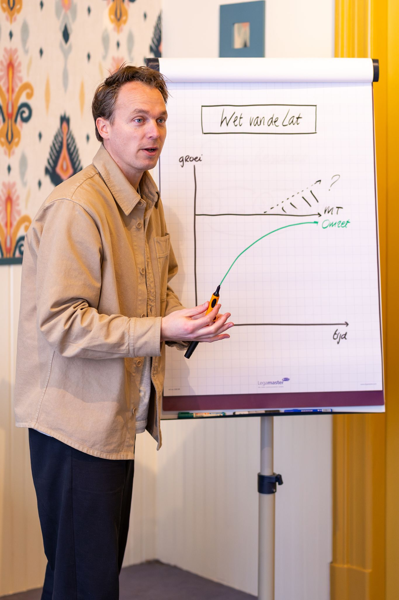
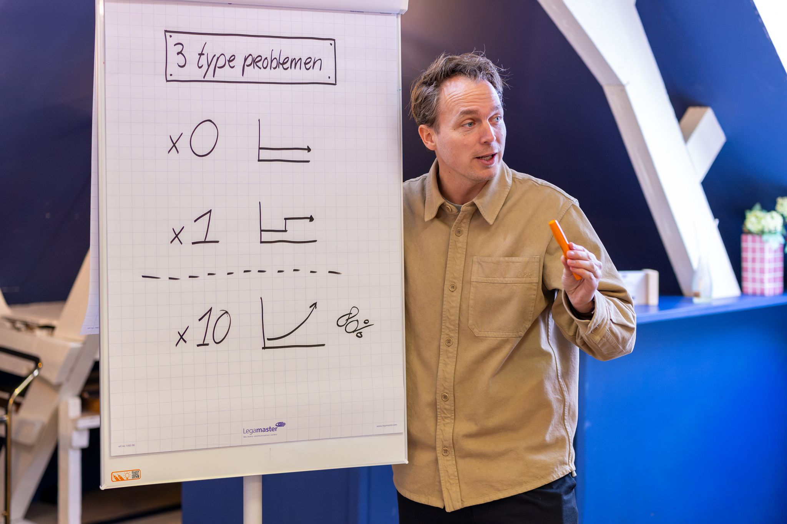

Werkwijze
Van brandjes blussen naar strategisch sturen.
Geen quick fix en geen inspiratiesessie. We bouwen — in een vast ritme — aan gedrag dat blijft, gebaseerd op vijf disciplines.
01 De oude manier
Je MT vergadert veel.
En verandert weinig.
Vast in de operatie
Brandjes blussen in plaats van sturen. Details bespreken in plaats van groeiplannen. Reactief, in plaats van proactief.
Teamleads, geen MT-leden
Ze denken vanuit hun eigen afdeling, niet vanuit het hele bedrijf. Ze doen het voor het eerst — en niemand heeft ze verteld wat de rol inhoudt.
Alles loopt via de ondernemer
Het MT is opgericht om het sámen te doen. Maar in kennis, beslissingen en verantwoordelijkheid blijft de ondernemer de bottleneck.
02 Onze overtuiging
Een bedrijf groeit nooit sneller
dan zijn managementteam.
Leg de lat van je MT hoger en de rest volgt — omzet, marge, rust. Blijft de lat liggen, dan loop je vast, hoe hard iedereen ook werkt.
Daarom trainen we niet de ondernemer, maar het team dat het bedrijf draagt.

03 Zo bouwen we een strategisch MT
Vijf disciplines. Geen theorie, wel gedrag dat blijft.
- 01
Strategie
Op één A4, met helderheid en focus. Iedereen kan het in drie minuten uitleggen.
- 02
Meeting ritme
Een strak vergaderritme met spelregels. Strategisch in plaats van operationeel.
- 03
Executie
Duidelijkheid over wie waarvoor verantwoordelijk is — en wat er verwacht wordt.
- 04
Cijfers
Cijfers die vertellen hoe het écht gaat. Beslissen op data én onderbuik.
- 05
Team
Hoe je een sterk team bouwt met A-spelers, die elkaar scherp houden.
Wat het je MT oplevert
- Operationeelstrategisch
- Chaosgedisciplineerde uitvoering
- Afhankelijkzelfstandig
Wat het je organisatie oplevert
- Kennis in hoofdensystemen om op te bouwen
- Onduidelijkheiddiscipline tot op de werkvloer
- Pieken en dalenvoorspelbaar doorgroeien
04 Hoe een sessie voelt
Elke twee weken. Vier uur. Vast ritme.

- 1
Terugkijken
Wat is gelukt sinds de vorige sessie, en wat nog niet.
- 2
Leren
Nieuwe kennis en kaders voor de discipline van die sessie.
- 3
Doen
Direct toepassen op jullie eigen situatie.
- 4
Vastleggen
Wie doet wat, tot de volgende sessie.